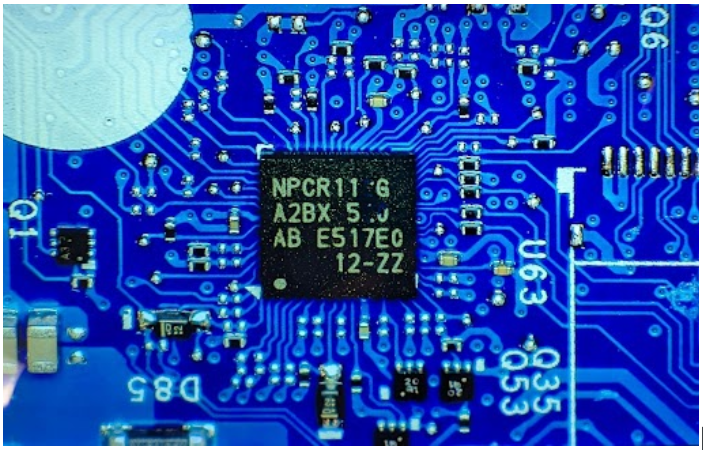
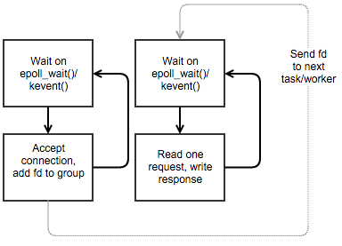
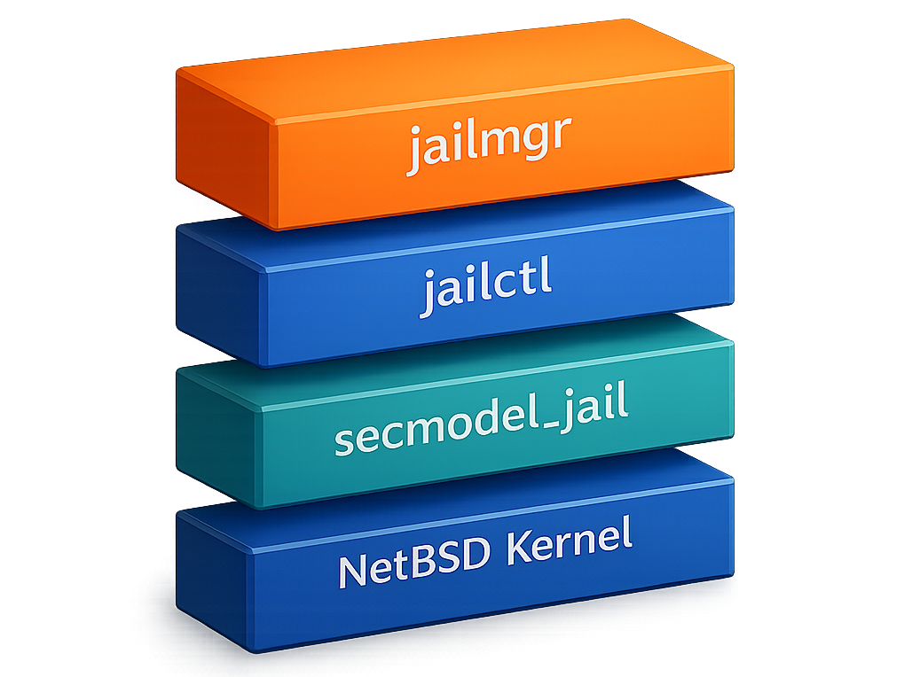

THE FRONT PAGE
EDITOR'S NOTE: Trust, once automated, becomes the weakest link—yet the tools we build still assume the user will read the fine print. #the unchecked delegation of critical workflows to opaque toolchains

The first commercial open-source silicon Root of Trust shifts the security burden from opaque vendor promises to verifiable logic. While it invites unprecedented scrutiny, the tradeoff lies in the immense engineering discipline required to maintain a hardware-level monoculture against emerging side-channel exploits.
The follow-up to GLiNER sidesteps the usual LLM hype by unifying structured data extraction under a single model, trading off some transparency for raw adaptability. Engineers may finally have a tool that doesn’t force them to choose between rigid schemas and hallucination-prone generative approaches—if they’re willing to trust the black box a little more.
A ground-based simulation of weightlessness found elevated clotting biomarkers in women after just five days, raising questions about long-duration spaceflight protocols. The tradeoff: countermeasures like anticoagulants add complexity to missions already strained by limited medical resources.
This repository formalizes the history of attempts to bridge fMRI signals with synthetic imagery, offering a sobering look at how much clarity we lose when translating biological noise into pixel data. While these datasets are essential for validation, the tradeoff remains a persistent lack of anatomical specificity in the resulting reconstructions.
The latest release of Jido, an Elixir-based agent framework, ships with a streamlined supervisor hierarchy and built-in fault-tolerance patterns—raising the bar for lightweight concurrency but leaving observability as an afterthought. Engineers will appreciate the reduced boilerplate, though the tradeoff in introspection tools may frustrate production deployments.
By embedding a GUI agent directly into the application state rather than observing from the outside, PageAgent reduces latency but introduces a significant security surface area if the agent is permitted to execute arbitrary script injections. It is a necessary, if slightly unnerving, step toward browsers that act as autonomous agents rather than static document viewers.
A 7B-parameter model now handles real-time, bidirectional speech translation natively on M-series chips, using Swift bindings that sidestep CUDA. The catch? Apple’s neural engine still chokes on longer contexts, and the demo code buries its memory leaks under a mountain of `unsafe` flags.

Fast-Servers prioritizes raw throughput over execution integrity, trading architectural robustness for a momentary gain in packet speed. This shift risks turning the workstation into a mere terminal, hollowing out the discipline of edge-based optimization.

A new NetBSD feature, *jails*, delivers lightweight process isolation with native resource controls—no virtualization overhead, but at the cost of abandoning Linux compatibility. The kind of unsexy, precise engineering that reminds you why Unix still matters when containers have turned into bloated app stores.
MODEL RELEASE HISTORY
No confirmed model releases were detected for this edition date.
OpenAI’s unannounced GPT-5.4 revision trims token costs by 12% while maintaining latency—an incremental win for hyperscalers, but one that further erodes margins for smaller inference shops already racing to the bottom. The catch? Early adopters report a 3% uptick in nonsensical outputs under high-load conditions.